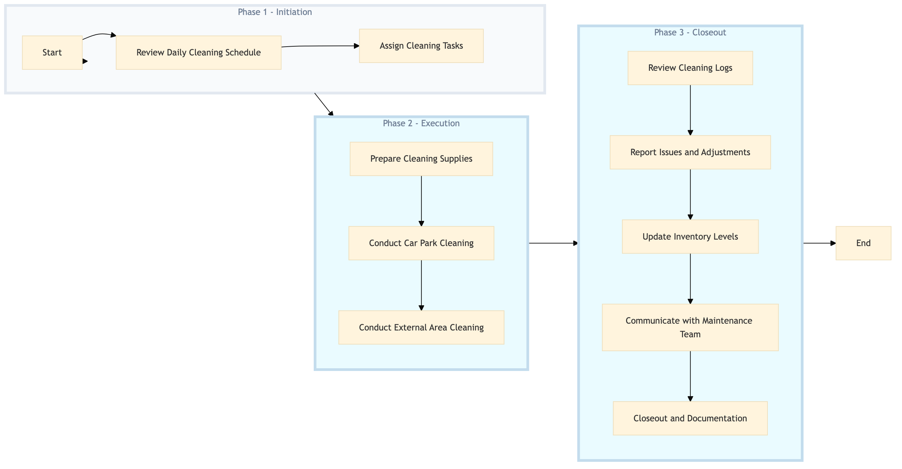

| Role | Steps |
|---|---|
| Executive Housekeeper | 1.1 3.5 |
| Housekeeping Supervisor | 1.2 2.1 3.1 3.2 3.3 3.4 |
| Housekeeping Staff | 2.2 2.3 |
| Step | Name | Role | System | Input | Output | KPI | Dec? | Exc? | Pain Point / Risk |
|---|---|---|---|---|---|---|---|---|---|
| 1.1 | Review Daily Cleaning Schedule | Executive Housekeeper | Oracle OPERA Cloud | Daily cleaning schedule | Updated daily cleaning schedule | Less than 5 minutes | N | Y | Incorrect or outdated schedules can lead to missed cleaning tasks. |
| 1.2 | Assign Cleaning Tasks | Housekeeping Supervisor | Oracle OPERA Cloud | Updated daily cleaning schedule | Task assignments for housekeeping staff | Less than 10 minutes | N | Y | Inefficient task assignment can lead to uneven workload distribution. |
| 2.1 | Prepare Cleaning Supplies | Housekeeping Staff | Birchstreet Procurement | Cleaning supply inventory levels | Order list for restocking supplies | Less than 20 minutes | N | Y | Running out of cleaning supplies can disrupt operations. |
| 2.2 | Conduct Car Park Cleaning | Housekeeping Staff | Oracle OPERA Cloud | Task assignments | Cleaning logs | Less than 30 minutes per car park area | N | Y | Inadequate cleaning can lead to guest complaints. |
| 2.3 | Conduct External Area Cleaning | Housekeeping Staff | Oracle OPERA Cloud | Task assignments | Cleaning logs | Less than 45 minutes per external area | N | Y | Neglected areas can attract pests and reduce property value. |
| 3.1 | Review Cleaning Logs | Housekeeping Supervisor | Oracle OPERA Cloud | Cleaning logs | Quality assurance report | Less than 20 minutes | N | Y | Inaccurate logs can lead to oversight of cleaning quality. |
| 3.2 | Report Issues and Adjustments | Housekeeping Supervisor | Oracle OPERA Cloud | Quality assurance report | Updated schedule or task assignments | Less than 15 minutes | N | Y | Ignoring issues can result in persistent cleanliness problems. |
| 3.3 | Update Inventory Levels | Housekeeping Supervisor | Birchstreet Procurement | Order list for restocking supplies | Updated inventory levels | Less than 10 minutes | N | Y | Outdated inventory can lead to unnecessary costs. |
| 3.4 | Communicate with Maintenance Team | Housekeeping Supervisor | Oracle OPERA Cloud | Quality assurance report | Maintenance request logs | Less than 10 minutes | N | Y | Delayed communication can result in unresolved maintenance issues. |
| 3.5 | Closeout and Documentation | Executive Housekeeper | Oracle OPERA Cloud | Quality assurance report, maintenance request logs | Daily cleaning summary report | Less than 10 minutes | N | Y | Incomplete documentation can lead to accountability issues. |
The process for managing car park and external area cleaning at a full-service Marriott hotel involves scheduling, executing, and monitoring cleaning activities to ensure guest satisfaction and property cleanliness.